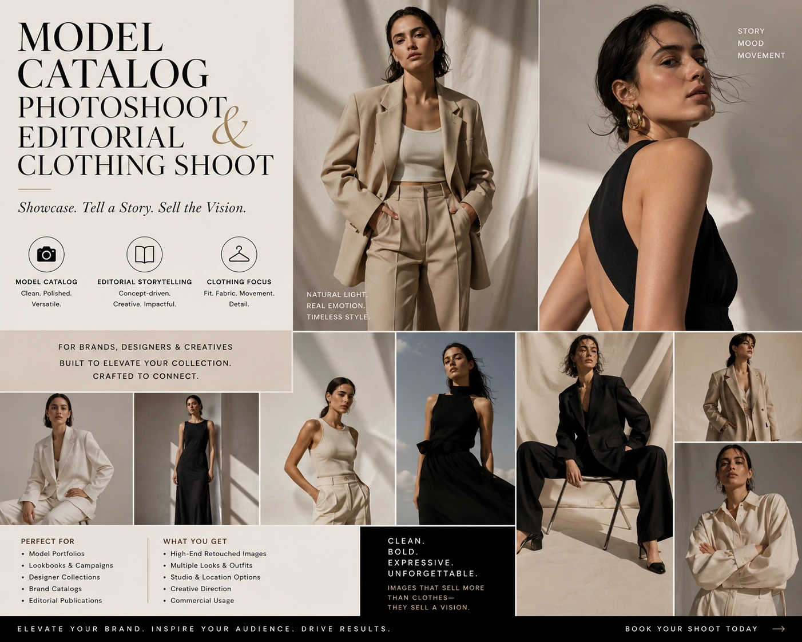
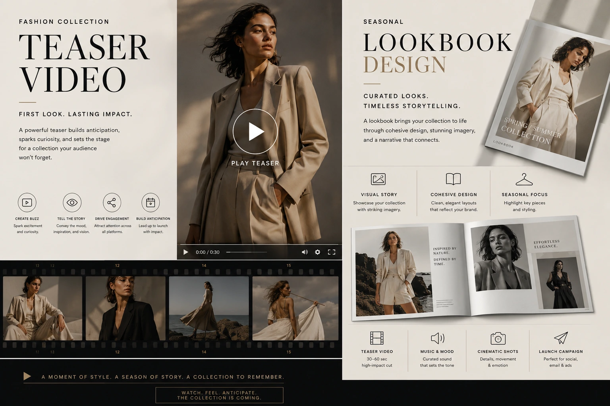

Constructing a Concept-Driven Fashion Lookbook That Sells Out Collections
Why the Lookbook Is the Most Commercial Investment in Fashion Visual Production
Fashion brands produce many types of visual content — product photography, social media content, advertising creative, influencer campaigns — but none of them delivers the concentrated commercial impact of a well-constructed fashion lookbook. A lookbook is the visual argument for an entire collection: the document that communicates the collection's world, the styling possibilities within it, the material quality and craftsmanship behind it, and the aspiration that justifies its price positioning — all in one coherent, designed visual experience that sells not just garments but the desire to inhabit the world the garments belong to.
The difference between a fashion lookbook production that sells out a collection and one that produces modest engagement is not primarily a photography quality difference — it is a concept difference. A lookbook built around a specific, coherent creative concept produces a visual document that buyers want to keep and share, that wholesale buyers use to pre-order confidently, and that provides the content library that fuels a full season of social media, email, and advertising campaign assets.
This guide covers the complete production framework for concept-driven fashion lookbook production — from creative concept development and model catalog photoshoot planning through garment texture lighting, editorial composition, fashion collection teaser video production, and seasonal lookbook design delivery.
The Creative Concept: The Foundation That Determines Everything Else
Every production decision in a conceptual apparel photography session — the location, the model casting, the styling, the lighting approach, the post-production colour treatment — flows from the creative concept. A concept developed before the shoot brief is written produces a coherent visual document. A concept developed during the shoot produces a collection of individual images that do not hold together as a story.
The creative concept for a clothing brand visual campaign or seasonal lookbook should answer three questions before any production decisions are made:
- What is the world this collection inhabits? Not a setting description — a world. The specific emotional and cultural context that the collection's garments belong to. For an Indian women's wear brand launching a festive collection, the world might be "a contemporary Chettinad heritage house during a family celebration — the intersection of traditional architecture and modern confidence." For a menswear brand launching a workwear line, it might be "the Madurai business district at 7 AM, before the city fully wakes — ambition in motion." The specificity of the world description determines the specificity of every subsequent production decision.
- What does the collection's customer feel when they wear these garments? The emotional outcome — not the product feature. Confident, unobserved confidence is different from celebratory, seen confidence. Quiet, private elegance is different from public, aspirational elegance. The specific emotional outcome the collection is designed to produce for its wearer is the emotional register that every image must communicate.
- What visual references define the collection's aesthetic DNA? Two to three specific visual references — a film, a period of photography, a painter, a place — that the creative team can align around as a shared visual language. These references define the colour palette, the compositional approach, the lighting style, and the post-production treatment — not as imitation but as alignment points that ensure every image in the lookbook shares a coherent visual identity.
Location Selection
The concept determines the location — not the other way around. The location that most authentically communicates the collection's world is the right location, regardless of whether it is conventionally "photogenic." A genuinely specific location communicates specificity of vision; a generic beautiful location communicates generic aspiration.
Model Casting
The concept determines the casting — the specific physical type, energy, and presence that most authentically communicates the collection's customer. Casting against the brand's actual demographic rather than a generic fashion model standard produces images that the target customer recognises as representing someone like them.
Styling Direction
The concept determines the styling — how the garments are worn, what accessories accompany them, how the hair and makeup communicate the world. Styling that aligns with the concept produces images where every element reinforces the collection's story; styling that contradicts the concept produces images where individual garments are visible but the collection's identity is not.
Post-Production Colour Treatment
The concept determines the colour grade — the specific warmth, contrast, saturation, and tonal treatment that communicates the world's emotional register. The colour grade is as important as the photography in establishing the lookbook's visual identity across every spread.

Model Catalog Photoshoot: Casting and Direction for Concept Alignment
The model catalog photoshoot is where the concept becomes image — and the quality of that translation depends entirely on the specificity of the creative brief given to the model, the stylist, and the photographer before the first frame is shot.
The specific direction that makes a model catalog photoshoot conceptually coherent rather than aesthetically generic:
- Character brief, not pose direction. The most effective model direction for a concept-driven lookbook gives the model a character to inhabit rather than a pose to replicate. "You are a woman who has just finished a meeting she ran. She is walking to lunch, slightly early, enjoying a rare moment of unhurried time" produces a fundamentally different energy than "stand here and look confident." The character brief creates the natural, specific expressiveness that distinguishes a concept-driven lookbook from a generic catalog.
- Movement over static poses for editorial images. The images that define the mood of a concept-driven lookbook are almost never static poses — they are the moments caught in movement: a turn, a look over the shoulder, a hand in motion, a pause mid-stride. Directing the model to perform specific movements — walking through a doorway, turning toward a window, climbing a step — and shooting in burst mode throughout the movement produces a range of frames across the complete arc of the action, from which the most specific and emotionally resonant individual frames can be selected.
- Casting for demographic authenticity and concept fit. For Indian fashion brands, casting models who reflect the brand's actual customer demographic — the specific skin tone range, age bracket, and physical type that the brand's customer identifies with — produces images that are both more visually authentic and more commercially persuasive to the target audience. Casting a model who does not reflect the brand's customer communicates that the brand is aspirational in a direction its actual customer cannot reach — which reduces the purchase conversion that is the lookbook's primary commercial purpose.
- Multiple models for collection diversity. A lookbook featuring a single model communicates one version of the collection's world. A lookbook featuring two to three models — cast for complementary physical types and personality energies — communicates the collection's versatility and accessibility across a broader customer range. For Indian fashion brands with collections designed to appeal across multiple age brackets or lifestyle contexts, multi-model casting is the production investment that most directly broadens the commercial reach of the lookbook.
Garment Texture Lighting: The Technical Foundation of Fashion Photography
Garment texture lighting is the specific lighting technique that communicates the material quality of every garment in the collection — and for Indian fashion brands whose competitive advantage is often expressed through the quality of their textiles, garment texture lighting is the production decision that most directly supports the brand's price positioning.
The specific approaches to garment texture lighting by textile type:
Silk and Woven Textiles
- Low-angle raking light at 30 to 45 degrees from the fabric surface reveals weave structure
- Single large diffused source prevents specular hot spots on silk sheen
- Rim lighting from behind creates the fabric-in-motion shimmer that characterises silk quality
- Avoid direct hard light that creates blown-out highlights on silk surfaces
Cotton and Linen
- Directional window light or equivalent reveals the matte, organic texture of natural fibres
- Slight overexposure in the highlights communicates the soft, clean quality of fine cotton
- Soft shadows in the weave communicate thread weight and fabric density
- Avoid heavily diffused wrap-around lighting that flattens cotton texture entirely
Embellished and Zari Fabrics
- Multi-point lighting from different angles to catch embellishment from multiple directions
- Movement photography to capture zari catching and releasing light in motion
- Close-up detail shots with dedicated macro lighting to reveal embellishment precision
- Background chosen to contrast with embellishment colour for maximum visual impact
Editorial Clothing Shoots: The Visual Grammar of Fashion Storytelling
Editorial clothing shoots for a concept-driven lookbook follow a specific visual grammar — a set of compositional, tonal, and stylistic conventions that signal editorial quality to the fashion audience and distinguish the lookbook from a catalog or a commercial product shoot.
The visual grammar elements that define editorial clothing shoots:
- The establishing image. Every editorial clothing shoot opens with an establishing image — a wider composition that shows the model in the full environment, communicating the world of the collection before the detail work begins. The establishing image is the visual equivalent of a film's opening shot — it sets the visual world and the emotional register before the story unfolds. In the printed lookbook, the establishing image occupies a full double spread; in the digital lookbook, it is the first scroll position.
- The hero look image. The central image for each look — the definitive single frame that communicates the outfit's full impact. Shot at medium or three-quarter distance to show the complete garment without tight cropping that would obscure the styling. Composed to communicate the specific character brief rather than simply documenting the garment. The hero look image is the primary e-commerce image for the specific outfit composition and the primary Instagram grid image for the collection's social campaign.
- The intimate detail image. A close compositional frame that isolates a specific detail of the garment — the embellishment, the fabric texture, the collar construction, the hand position against the fabric — communicating the craft quality of the collection at a level of detail the full-length images cannot show. For the lookbook's design, detail images break the rhythm of full-length model shots and communicate craft depth; in the e-commerce context, these are the detail gallery images that resolve purchase hesitation.
- The lifestyle context image. The model not wearing the garment in a posed fashion sense, but inhabiting the collection's world — sitting, moving through a space, engaging with an element of the environment — where the garment is present but the primary subject is the moment and the world. Lifestyle context images are the most social-media-effective images in the lookbook because they communicate aspiration through scene rather than through direct product display.

Fashion Collection Teaser Video: The Launch Content That Builds Anticipation
The fashion collection teaser video is produced from the same shoot day as the lookbook photography — sharing the location, the models, the styling, and the creative direction — and it is the single most commercially efficient piece of content produced in the entire lookbook production process, because it is produced at an incremental cost above the photography session and serves the highest-reach distribution channel: social media video.
The structure of an effective fashion collection teaser video:
- Duration: 30 to 60 seconds for social media; 90 seconds for YouTube and website. The social media teaser is optimised for the Reels and Shorts context — short enough to watch repeatedly, long enough to communicate the collection's world with emotional depth. The website and YouTube version extends the narrative slightly for an audience that has actively chosen to engage with the brand's content.
- Music-led rather than dialogue-led. The fashion teaser video communicates primarily through visual and musical language — not through narration or product description. The music track is selected before the edit begins and determines the pacing, the emotional register, and the rhythm of the cuts. A music track that is aligned with the collection's concept communicates the brand's cultural intelligence and aesthetic sophistication in a way that generic stock music cannot.
- No full look reveals — selective, incomplete disclosure. The teaser should show enough of the collection to communicate its world and quality without revealing every look — maintaining the mystery and anticipation that makes the full lookbook launch an event rather than a routine content drop. Selective framing, partial reveals, and atmospheric shots that suggest garments without fully showing them produce a teaser that generates the curiosity that drives lookbook engagement on launch day.
- Vertical cut delivered alongside horizontal. The teaser video is produced in horizontal 16:9 for YouTube and website and vertical 9:16 for Instagram Reels, YouTube Shorts, and WhatsApp Status — from the same source footage, with reframing in post-production to maintain composition in both aspect ratios.
Seasonal Lookbook Design: The Physical and Digital Document
Seasonal lookbook design — the layout, typography, and sequencing of the photography into a designed document — is the final production stage that transforms a collection of images into the commercial sales tool the lookbook is designed to be.
The design decisions that determine the commercial effectiveness of a seasonal lookbook design:
- Image sequence builds the story and sustains the desire. The lookbook should open with the establishing image, develop through the full range of the collection's looks with deliberate alternation between hero, detail, and lifestyle images, and close with an image that resolves the collection's story at an emotional high point. The sequence should be designed so that every turn of a page (or every scroll position in a digital lookbook) produces a new visual discovery — never allowing two similar images to appear in sequence, always building visual energy toward the collection's most powerful looks.
- Typography that communicates brand identity, not just product information. The typeface, weight, scale, and positioning of text in a lookbook communicates brand identity as powerfully as the photography. A luxury womenswear brand uses different typography than a contemporary streetwear brand; an Indian heritage textile brand uses different typographic language than an urban contemporary brand. The typography should be briefed as part of the concept development — not selected from a generic template after the photography is complete.
- Designed for multi-channel distribution from the outset. A lookbook designed only as a print document requires significant reformatting for digital distribution. A lookbook designed for both from the outset — with digital PDF, Instagram carousel, email header, and print versions all considered in the layout — produces a document that distributes efficiently across every channel the collection needs to reach.
Retail Garment Visual Assets: The Complete Production Deliverable Set
The retail garment visual assets produced from a concept-driven lookbook production session should include the complete set of assets required across every channel where the collection will be distributed — not just the lookbook document itself:
- Lookbook document: Designed PDF for digital distribution, print-ready PDF for physical printing, low-resolution web version for email attachment
- E-commerce product gallery images: White background hero images for marketplace listings plus the editorial lifestyle images for the brand's own website product pages
- Instagram content library: Square and vertical crops of hero, detail, and lifestyle images formatted for Instagram grid and Stories posting across the season
- Collection teaser video: Horizontal 16:9 for YouTube and website; vertical 9:16 for Reels and Shorts; 30-second and 60-second cuts
- Paid advertising creative: Static and video ad variants in Meta and Google display formats, extracted from the lookbook photography and teaser video
- Wholesale buyer pack: A curated selection of the lookbook's hero images alongside product specifications and order information for wholesale buyer distribution
Apparel Marketing Campaign: From Lookbook to Full-Season Content Strategy
The apparel marketing campaign built on a concept-driven lookbook does not launch and complete on the lookbook release date — it sustains a full season of content by progressively releasing different elements of the lookbook across different channels and content moments:
- Week minus two: Collection teaser video released on social media and pushed with a small paid boost to the brand's target audience — building anticipation before the full lookbook reveal.
- Week minus one: Behind-the-scenes content from the lookbook shoot — candid footage, styling moments, location details — released as Stories and casual social posts that build familiarity with the collection's world before the formal reveal.
- Launch week: Full lookbook release across all channels — website launch, email campaign to customer list, paid social campaign driving traffic to the collection page, wholesale buyer outreach with the buyer pack.
- Weeks two through six: Individual look features, detail posts, styled outfit content, and customer photograph reposts — progressively deepening the content catalogue from the single lookbook production investment across the full selling season.
Conclusion
A concept-driven fashion lookbook production is the most commercially concentrated visual investment available to Indian fashion brands — because a single, well-planned lookbook shoot produces the entire visual infrastructure for a seasonal apparel marketing campaign: the editorial clothing brand visual campaign imagery, the model catalog photoshoot e-commerce assets, the fashion collection teaser video, the printed and digital seasonal lookbook design, the wholesale buyer pack, and the full-season social media content library.
The collections that sell out are not the ones with the largest paid advertising budgets. They are the ones with the most compelling visual argument for why the buyer needs to inhabit the world the collection creates. That argument is built in pre-production, expressed in the photography, and sustained across the full season through the content the lookbook production generates.
At The PhD Ads, we produce fashion lookbook production for Indian apparel brands — concept development, model catalog photoshoots, garment texture lighting, editorial clothing shoots, fashion collection teaser videos, and complete seasonal lookbook design — built for brands ready to produce the visual campaign that sells out their collection.
Key Topics
Ready to Produce the Lookbook That Sells Out Your Collection?
At The PhD Ads, we specialise in concept-driven fashion lookbook production for Indian apparel brands — from creative concept development and model casting through editorial photography, garment texture lighting, collection teaser video, and full seasonal lookbook design, delivered as a complete apparel marketing campaign asset library.
Email: team@e2o.in